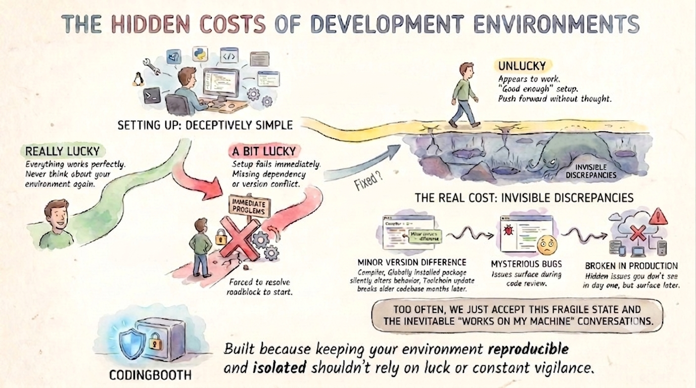
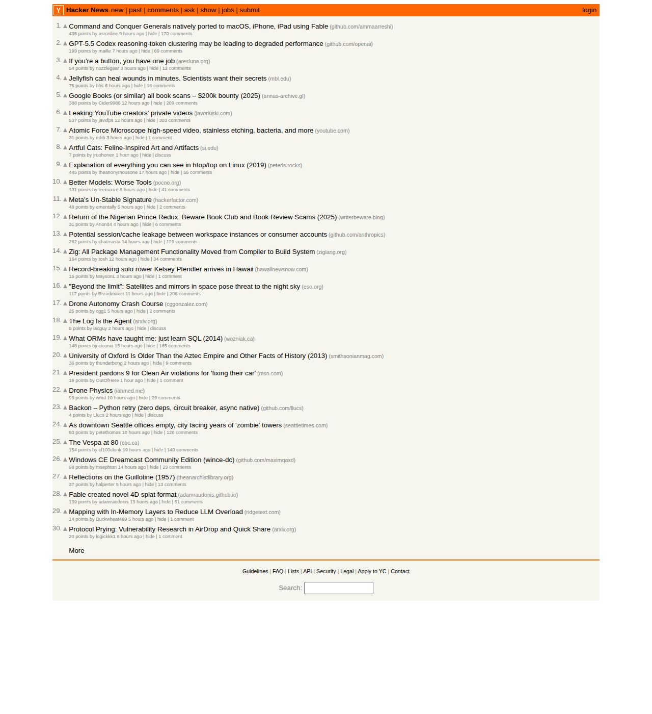
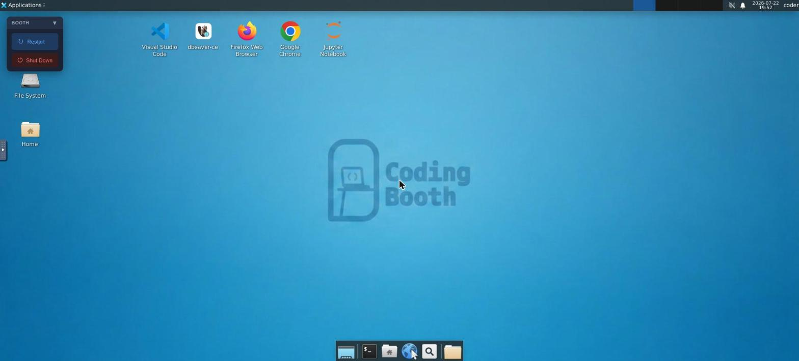
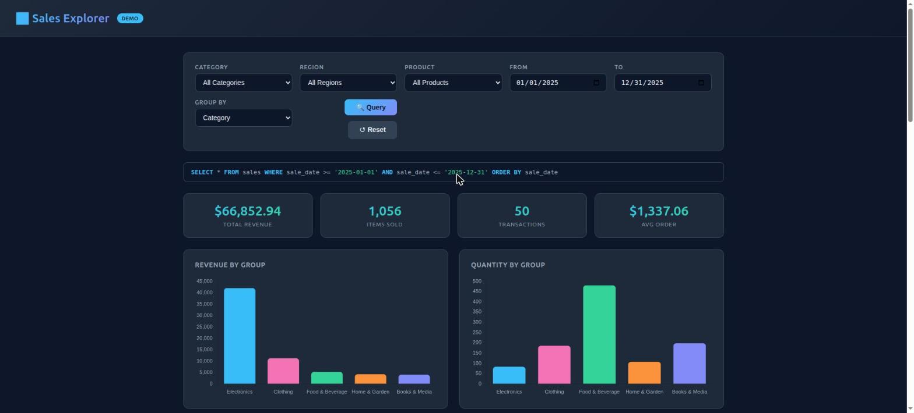

28 June 2026 · Nawa Man
Getting into a project fast is only half the job — getting in right is the other half. Why onboarding shouldn't rely on luck.
When we think about software development, we often think about adding or changing of code and the understanding of the code before that. Setting up the development environment is often overlook until someone on-broard the project who are not familiar with the toolchain. The setup can range from just having the compiler to multiple setup steps and be a simple sentense like "Use python" to super complext make file. Even with an automate installtion script, it is not always up to date and/or work with different environment. There also "multiple project" interferances like version conflict or worst "almost" conflict. Depending on how that goes, you usually fall into one of three buckets:

For many developers, that “good enough” setup in the third bucket is where the process ends, allowing them to push forward without much thought. But the real cost of environment management isn't an upfront roadblock — it's the slow, creeping tax of invisible discrepancies.
A minor version difference in a compiler, a globally installed package that silently alters a project's behavior, or a toolchain update that inexplicably breaks an older codebase months later. These issues don't stop you on day one; they surface as mysterious bugs during code review or broken builds in CI. Too often, we just accept this fragile state and the inevitable “works on my machine” conversations as a frustrating fact of life. CodingBooth was built because keeping your environment reproducible and isolated shouldn't rely on luck or constant vigilance.
Quick onboarding means the distance between “I have the repo” and “I'm writing code” is a single command. No README full of platform-specific install steps, no afternoon spent chasing a missing system library, no Slack thread asking which version of the toolchain everyone else is on. You clone, you run the booth, and the environment builds itself.
git clone <repo> && cd <repo> && ./boothThe environment is declared in the repo, in a small .booth/ folder, so the very first
command a new teammate runs is also the command that gives them the exact setup. There's
nothing to install by hand and nothing to get subtly wrong. A new hire, a teammate switching
branches, or future-you reviving a dormant project all reach a working environment in minutes —
not on day three.
Quick is only half of it. The “Unlucky” path from the start of this post is quick too — it just happens to be wrong in ways you won't notice for weeks. Onboarding right means everyone gets the same image: the same compiler at the same version, the same libraries, the same running services, every time the booth is built.
Because the booth is created from its definition and thrown away when you're done, there's no long-lived machine accumulating drift. The definition lives in version control next to your code, so the environment changes only when the repo changes — reviewed in the same pull request as everything else. That's what turns off the creeping tax: no minor version difference sneaking in, no globally installed package silently changing behavior, no “it used to build.” The environment stops being a variable, so the only thing left to explain a bug is the code itself.
Quick onboarding gets people working today; right onboarding keeps them and everyone after them working without paying the creeping tax. You don't have relia on luck to get both. Declare the environment once in the repo, and every clone after that is both fast and correct by construction.
The idea is only convincing if you can run it.
Each of these is a ready-made booth you can fetch and
launch in two commands — booth example try to grab it, then one command to run. Every
line of output below is real, captured from an actual run; browse the full set with booth example list.
./booth example try fsharp ./fsharp-demofsharpThe friction in evaluating a language is the install: the .NET SDK is a heavy thing to put on your machine for a weekend's curiosity. In a booth it's one command, nothing on your host, and the .NET version is pinned — so the playground behaves the same for whoever you send it to. That's quick (no install) and right (reproducible) at the same time.
$ ./booth --silence-build -- ./run-fsharp.sh # Run `./run-fsharp.sh` inside booth.
== customers.csv ==
customer_id,age,annual_income_k,spending_score
1,25,25,18
2,28,22,15
3,23,30,22
... # More data
29,38,57,51
30,33,51,46
=== Customer analytics (F# in CodingBooth) ===
Loaded 30 customers from customers.csv
Summary statistics:
age mean= 33.8 min= 22.0 max= 48.0 std= 6.6
income (k$) mean= 55.2 min= 21.0 max= 92.0 std= 24.8
spending (1-100) mean= 50.3 min= 12.0 max= 90.0 std= 26.5
K-means clustering (k=3) on income vs spending:
Segment 1: 10 customers | centroid income= 25.5k spending=18.5
customers: 1, 2, 3, 4, 5, 6, 7, 8, 9, 10
Segment 2: 10 customers | centroid income= 54.6k spending=49.6
customers: 21, 22, 23, 24, 25, 26, 27, 28, 29, 30
Segment 3: 10 customers | centroid income= 85.6k spending=82.7
customers: 11, 12, 13, 14, 15, 16, 17, 18, 19, 20
playwrightPlaywright's pain is environmental: browser binaries, a pile of system libraries, and a browser build that must match the Playwright version or your tests flake in CI. The booth pre-bakes the browser pinned to the project's version, so the documented command just runs — and it drives a real browser against real pages, not a mock:
$ ./booth -- ./run-screenshot.sh
Visiting https://news.ycombinator.com/ ...
Page title: Hacker News
Screenshot saved to screenshot.png
systemlibThe hard part of C and C++ isn't the compiler — it's the libraries. You need the right libxxx-dev packages so the headers and the shared objects are present, you
need the build to find and link them, and you need everyone on the same versions or you
get an "undefined reference" on one machine and a subtly different bug on another. A booth bakes the
libraries in, pinned, so the build just resolves them:
$ ./booth -- ./run-linkcheck.sh
-- Found CURL: /usr/lib/x86_64-linux-gnu/libcurl.so (found version "8.5.0")
-- Found SQLite3: /usr/lib/x86_64-linux-gnu/libsqlite3.so (found version "3.45.1")
[100%] Built target linkcheck
URL RESULT STATUS
------------------------------------------------ ------ ------
https://www.iana.org/ ALIVE 200
https://www.google.com/ ALIVE 200
https://www.google.com/this-page-does-not-exist DEAD DEAD: HTTP 404
https://this-host-does-not-exist-9x8y7z.invalid DEAD DEAD: Couldn't resolve host name
Summary: 2 alive, 2 dead. Recorded 4 rows to linkcheck.dbThe program is a link checker: it reads a list of URLs, checks each one with libcurl, and
records every result — URL, timestamp, status — into a SQLite database. Two real system
libraries, installed with apt and linked by CMake's find_package — exactly
the part header-only libraries let you skip. Nothing lands on your host, and the pinned APT_SNAPSHOT means the same library versions build for everyone, every time.
kind-appThe hardest onboarding is the realistic one. This booth bakes Docker-in-Docker, KinD, kubectl, Go, Bun and Python — all pinned — and stands up a real React + Go + PostgreSQL app on an in-container Kubernetes cluster from one command chain:
$ ./booth -- './start-cluster.sh && ./build.sh && ./deploy-app.sh && ./status.sh'
=== Deployment complete ===
NAME READY STATUS RESTARTS AGE
api-... 1/1 Running 0 8s
export-service-... 1/1 Running 0 9s
postgres-... 1/1 Running 0 22s
web-... 1/1 Running 0 8s
✔ SUCCESS: Cluster 'kind' is UP
kind-control-plane Ready control-plane 87s v1.32.2The cluster lives inside the booth, so tearing it down is just stopping the booth — your host is left exactly as clean as it started.
dataA data project is a pile of separate installs that all have to agree: a database, a SQL client,
Python with the right libraries, a notebook server. This booth bakes the whole workbench — PostgreSQL, DBeaver, JupyterLab, Python with matplotlib and psycopg2, and a small web
dashboard — and wires every one of them to the same seeded dataset. It's the kind-app idea made graphical: instead of a cluster on the command line, one command opens
a full desktop in your browser with the tools already running.
$ ./booth # opens an XFCE desktop in your browser
DBeaver opens with its connection to the demo database already configured; JupyterLab is up with a notebook that queries the data and charts it with matplotlib; and a Sales Explorer dashboard is serving live rows straight from PostgreSQL. One dataset, seen through every lens at once:

Stop the booth and the whole workbench — database, notebook, dashboard, every GUI — is gone, with nothing left installed on your host.
Installing CodingBooth is one command:
curl -fsSL https://codingbooth.io/install.sh | bashHappy coding!
Nawa Man
Comments